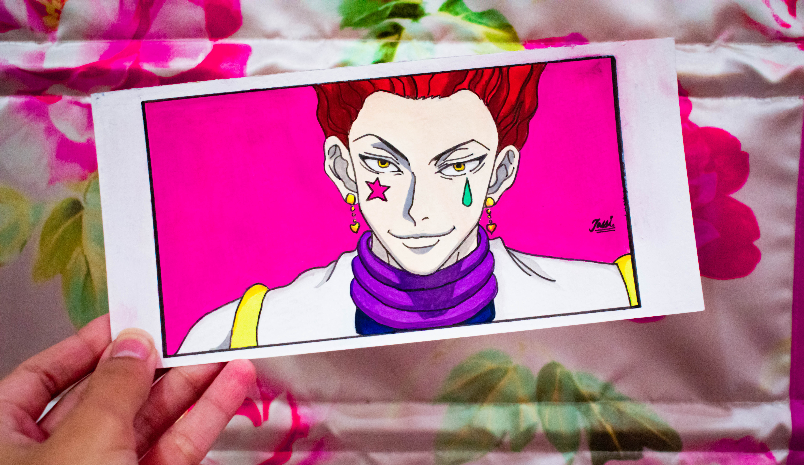

By JassieK
Team 7 was a Konohagakure team formed under the leadership of Kakashi Hatake. Two-and-a-half years after Sasuke Uchiha left the village, Kakashi filled out paperwork to form Team Kakashi, with his former pupils Naruto Uzumaki and Sakura Haruno now being treated as equals alongside their teacher. Following Yamato and Sai joining the team, the group went by Team Yamato during the former's leadership.
Personality. Hisoka is portrayed as entirely self-serving, self-absorbed, and selfish; he does whatever he likes as long as it pleases him in some way. His insatiable love for spilling the blood of powerful fighters in combat and his enjoyment of extreme pain while doing so fuels his seemingly sadomasochistic desires.
All you need is love. Anime inspired couple . Do you want a anime drawing of you and your love too? You can request art and mail me a picture of yours you wanted to be drawn as anime art.
Give up on your dreams and die.Levi has short, straight black hair styled in an undercut curtain, as well as narrow, intimidating dull gray eyes with dark circles under them and a deceptively youthful face. He is quite short, but his physique is well-developed in musculature from extensive vertical maneuvering equipment usage. He is usually either frowning or expressionless; that, plus his extremely calm demeanor, often makes it difficult for others to guess what he is thinking.
sukino Usagi, renamed "Serena Tsukino" or "Bunny Tsukino" in some foreign adaptations), better known as Sailor Moon (セーラームーン, Sērā Mūn), is a fictional superheroine who is the main protagonist and title character of the Sailor Moon manga series written by Naoko Takeuchi. She is introduced in chapter #1, "Usagi – Sailor Moon" (originally published in Japan's Nakayoshi magazine on December 28, 1991), as a carefree schoolgirl who can transform into Sailor Moon. Initially believing herself to be an ordinary girl, she is later revealed to be the reincarnated form of the Princess of the Moon Kingdom, and she subsequently discovers her original name, Princess Serenity .